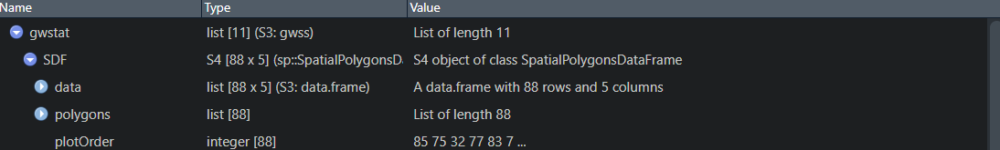
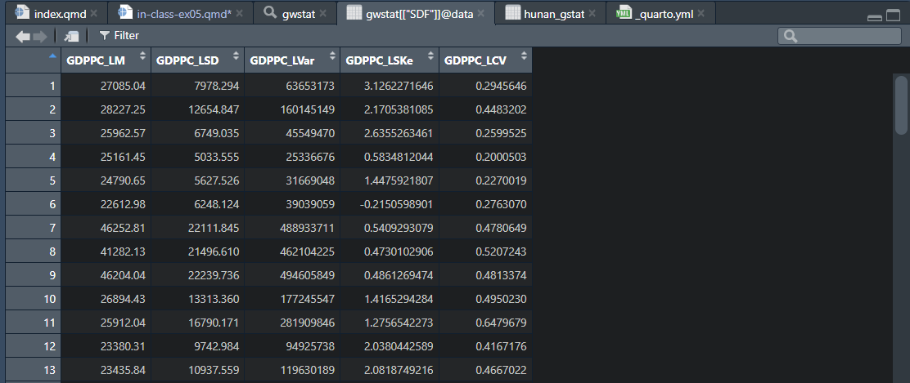
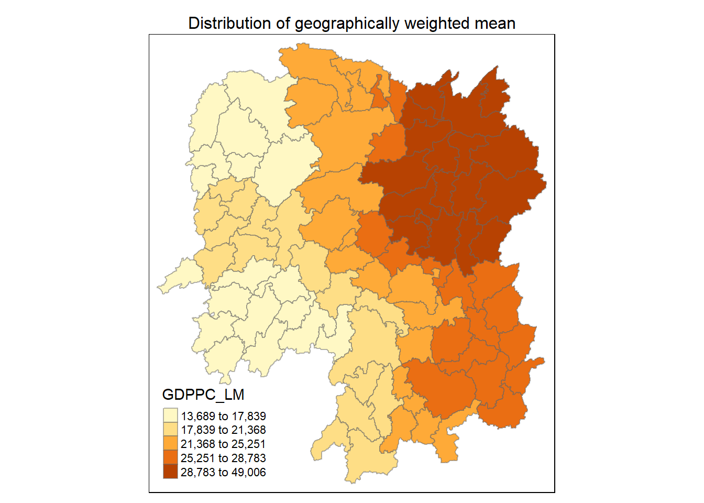

pacman::p_load(sf,spdep, tmap, tidyverse, knitr, GWmodel)05 In-class Exercise (Review)
1 Recap:
Geographically referenced attributes
-> entities are geographically referenced/have a location -> either polygons or points.
Preliminary Visualisation -> Just map it out on a map, then obtain
1.1 Spatial Weights
Types of Relationships to define Spatial Weights:
- Adjacent relationships (common boundary), also called Adjacency.
- if polygon data, there are also concerns that if a polygon is very long, then they will have a high adjacency count.
- Distance based relationships;
- if polygon data, the algorithm will find the centroids of each polygon. However, limitation: large and irregularly shaped polygons will result in centroids being extremely far away from others. To ‘fix’ this, we can shift the centroids of these large polygons closer to the other neighbours (depends on context.)
- if multipolygon/multipoint data, then you should choose the only necessary points so that your centroids or points are not in the middle of nowhere.
- If points, it will be easier –> just distance between points.
1.1.1 When defining Spatial Weights
- we can use binary metrics (whether within a search radius/distance)
- a continuous metrics (higher weights if near, lower weights if further)
1.1.2 Adjacency methods of Choosing Neighbours
- See: Rooks Case, Bishops Case, Queens/Kings Case
- Lagged Adjacency for continuity metric, see first order adjacency, second order adjacency, i.e. (neighbour of neighbour)
1.1.3 Standardising Weights
- In practice, we will not use spatial weights as-is, we will standardise the weights by row or by columns (gives the same final results as the matrix is symmetrical).
- The summation of standardised weights will therefore be an average average.
*GDPPC –> GDP per capita
2 In-class Exercise 05
Focus: Geographically Weighted Summary Statitstics with adaptive Bandwidth
2.1 Importing the necessary
We will be using a different version called GWmodel; Geographically-Weighted Models The latest date as of writing, is 2.4-1.
hunan_sf <- st_read(dsn="data/geospatial", layer="Hunan")
hunan_2012 <- read_csv("data/aspatial/Hunan_2012.csv")If we have a dataset where we do not exactly know the projection CRS, there is no choice but to use non-projected CRS. But in this case, we should search for the EPSG Code for projected CRS at Hunan, China
2.1.1 Join and Filter Out Unwanted Attributes
hunan <- left_join(hunan_sf, hunan_2012, by="County") %>%
select(1:3,7,15,16,31,32) # Selecting NAME_2, ID_3, NAME_3, County, GDPPC, GIO, Agri, Service2.1.2 Exporting our data
Once done, we will export our cleaned data set as a RDS file, so that we only to load in our final
write_rds(hunan,"data/rds/hunan_sf.rds")2.1.3 Reading back our data
2.1.4 Converting to SpatialPolygonDataFrame
Note: if we try to run GWmodel, we realise that GWmodel is built around the older sp and not sf formats for handling spatial data in R.
In sp, we have multiple lists –> data polygons proj4string
Looking through, we are able to see that the attributes are
hunan_sp <- hunan_sf %>% as_Spatial()2.1.5 Determine adaptive bandwidth.
Note that .gwr is used for regression, but we just want to use their model. Without providing an actual function, we write GDPPC ~ 1 –> which means GDPPC is a function of 1, i.e. GDPPC = GDPPC.
Caution
Our data is in lat,long, when we pass it through the algorithm, the algorithm will use the Great Circle projection. The output will be in kilometers (rather than metres)!
GDPPC ~ 1
bw_AIC <- bw.gwr(GDPPC ~ 1,
data= hunan_sp,
approach = "AIC", # or use CV (Cross-Validation) the AI models
adaptive = TRUE, # calculate
kernel = "bisquare", #
longlat = TRUE) # Given that our data is in latlong, the great circle Adaptive bandwidth (number of nearest neighbours): 62 AICc value: 1923.156
Adaptive bandwidth (number of nearest neighbours): 46 AICc value: 1920.469
Adaptive bandwidth (number of nearest neighbours): 36 AICc value: 1917.324
Adaptive bandwidth (number of nearest neighbours): 29 AICc value: 1916.661
Adaptive bandwidth (number of nearest neighbours): 26 AICc value: 1914.897
Adaptive bandwidth (number of nearest neighbours): 22 AICc value: 1914.045
Adaptive bandwidth (number of nearest neighbours): 22 AICc value: 1914.045 Note that we can see 22 Nearest Neighbours
bw_CV <- bw.gwr(GDPPC ~ 1,
data= hunan_sp,
approach = "CV",
adaptive = TRUE, # calculate
kernel = "bisquare", #
longlat = TRUE) # Given that our data is in latlong, the great circle Adaptive bandwidth: 62 CV score: 15515442343
Adaptive bandwidth: 46 CV score: 14937956887
Adaptive bandwidth: 36 CV score: 14408561608
Adaptive bandwidth: 29 CV score: 14198527496
Adaptive bandwidth: 26 CV score: 13898800611
Adaptive bandwidth: 22 CV score: 13662299974
Adaptive bandwidth: 22 CV score: 13662299974 bw_CV_fix <- bw.gwr(GDPPC ~ 1,
data= hunan_sp,
approach = "CV",
adaptive = FALSE,
kernel = "bisquare", #
longlat = TRUE) # Given that our data is in latlong, the great circleFixed bandwidth: 357.4897 CV score: 16265191728
Fixed bandwidth: 220.985 CV score: 14954930931
Fixed bandwidth: 136.6204 CV score: 14134185837
Fixed bandwidth: 84.48025 CV score: 13693362460
Fixed bandwidth: 52.25585 CV score: Inf
Fixed bandwidth: 104.396 CV score: 13891052305
Fixed bandwidth: 72.17162 CV score: 13577893677
Fixed bandwidth: 64.56447 CV score: 14681160609
Fixed bandwidth: 76.8731 CV score: 13444716890
Fixed bandwidth: 79.77877 CV score: 13503296834
Fixed bandwidth: 75.07729 CV score: 13452450771
Fixed bandwidth: 77.98296 CV score: 13457916138
Fixed bandwidth: 76.18716 CV score: 13442911302
Fixed bandwidth: 75.76323 CV score: 13444600639
Fixed bandwidth: 76.44916 CV score: 13442994078
Fixed bandwidth: 76.02523 CV score: 13443285248
Fixed bandwidth: 76.28724 CV score: 13442844774
Fixed bandwidth: 76.34909 CV score: 13442864995
Fixed bandwidth: 76.24901 CV score: 13442855596
Fixed bandwidth: 76.31086 CV score: 13442847019
Fixed bandwidth: 76.27264 CV score: 13442846793
Fixed bandwidth: 76.29626 CV score: 13442844829
Fixed bandwidth: 76.28166 CV score: 13442845238
Fixed bandwidth: 76.29068 CV score: 13442844678
Fixed bandwidth: 76.29281 CV score: 13442844691
Fixed bandwidth: 76.28937 CV score: 13442844698
Fixed bandwidth: 76.2915 CV score: 13442844676
Fixed bandwidth: 76.292 CV score: 13442844679
Fixed bandwidth: 76.29119 CV score: 13442844676
Fixed bandwidth: 76.29099 CV score: 13442844676
Fixed bandwidth: 76.29131 CV score: 13442844676
Fixed bandwidth: 76.29138 CV score: 13442844676
Fixed bandwidth: 76.29126 CV score: 13442844676
Fixed bandwidth: 76.29123 CV score: 13442844676 bw_AIC_fix <- bw.gwr(GDPPC ~ 1,
data= hunan_sp,
approach = "AIC",
adaptive = FALSE,
kernel = "bisquare", #
longlat = TRUE) # Given that our data is in latlong, the great circleFixed bandwidth: 357.4897 AICc value: 1927.631
Fixed bandwidth: 220.985 AICc value: 1921.547
Fixed bandwidth: 136.6204 AICc value: 1919.993
Fixed bandwidth: 84.48025 AICc value: 1940.603
Fixed bandwidth: 168.8448 AICc value: 1919.457
Fixed bandwidth: 188.7606 AICc value: 1920.007
Fixed bandwidth: 156.5362 AICc value: 1919.41
Fixed bandwidth: 148.929 AICc value: 1919.527
Fixed bandwidth: 161.2377 AICc value: 1919.392
Fixed bandwidth: 164.1433 AICc value: 1919.403
Fixed bandwidth: 159.4419 AICc value: 1919.393
Fixed bandwidth: 162.3475 AICc value: 1919.394
Fixed bandwidth: 160.5517 AICc value: 1919.391 2.1.6 Computing geographically weighted summary statistics
We will now calculate the summary statistics. Note that your parameters must be the same! If you used adaptive bandwidth, your parameter here should be parameter as well. Otherwise,

Note, under the list SDF > data, we open the table and see:

L means Local (note remember that we have 22 nearest neighbours)
LM means local mean, LSD means local standard deviation
gwstat <- gwss(data= hunan_sp,
vars= "GDPPC",
bw = bw_AIC,
kernel = "bisquare",
adaptive = TRUE,
longlat = TRUE)gwstat_df <- as.data.frame(gwstat$SDF)
hunan_gstat <- cbind(hunan_sf, gwstat_df) # we are appending both tables together based on their index. CAUTION: not to change the sequence of your data during this process.2.1.7 Visual Map of the Summary Statistics (Mean)
tmap_mode("plot")
tm_shape(hunan_gstat) + #
tm_fill("GDPPC_LM",
n = 5,
style = "quantile") +
tm_borders( alpha = 0.5 ) +
tm_layout(main.title = "Distribution of geographically weighted mean",
main.title.position = "center",
main.title.size = 1,
legend.text.size = 0.7,
legend.height = 1,
legend.width = 1,
frame = TRUE)
Further notes for Take-Home-Exercise01
You do not need to do the analysis for the whole of Myanmar. It will require an extremely large computational power.
You can scale down the study area into specific regions, and try to find out what are the localised spatial point patterns.
In fact, that will allow us to see the localised patterns better. See previous work on Take-Home Exercises.